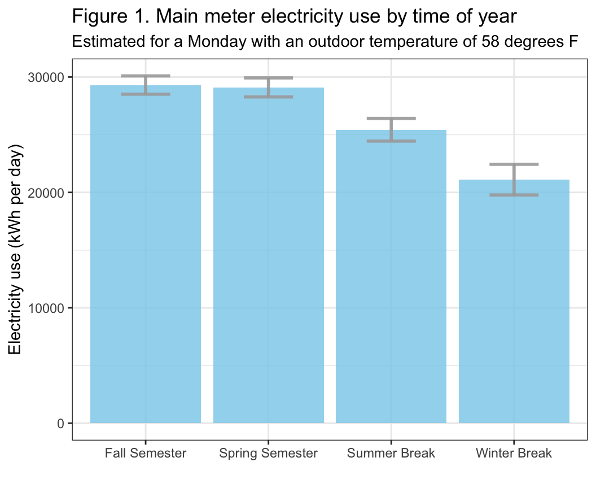
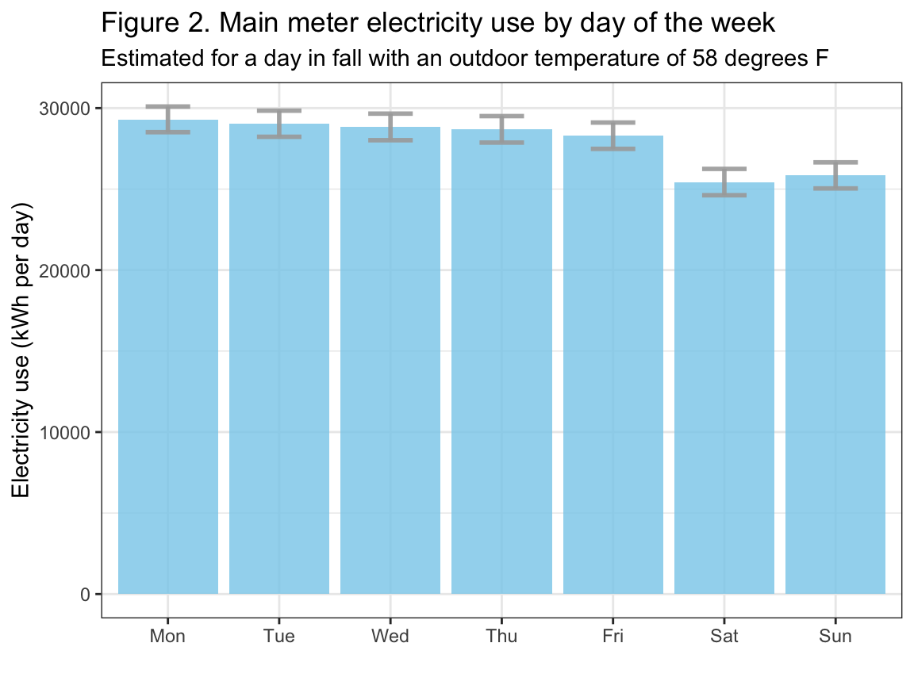
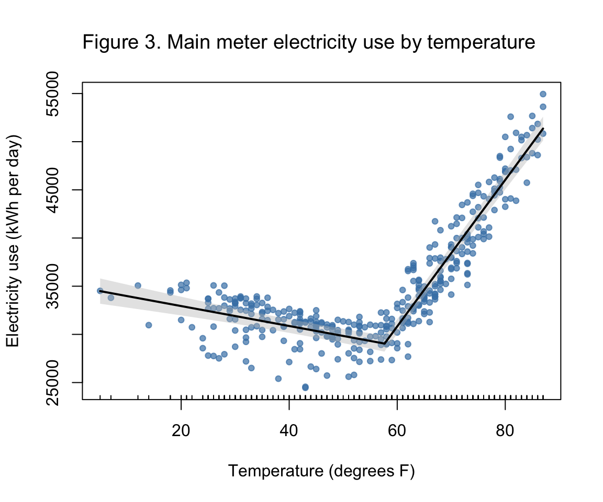
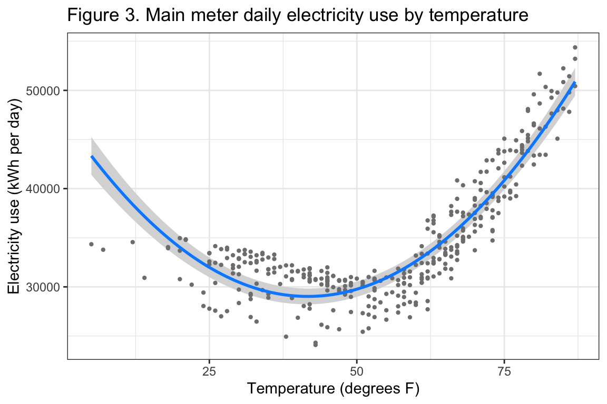
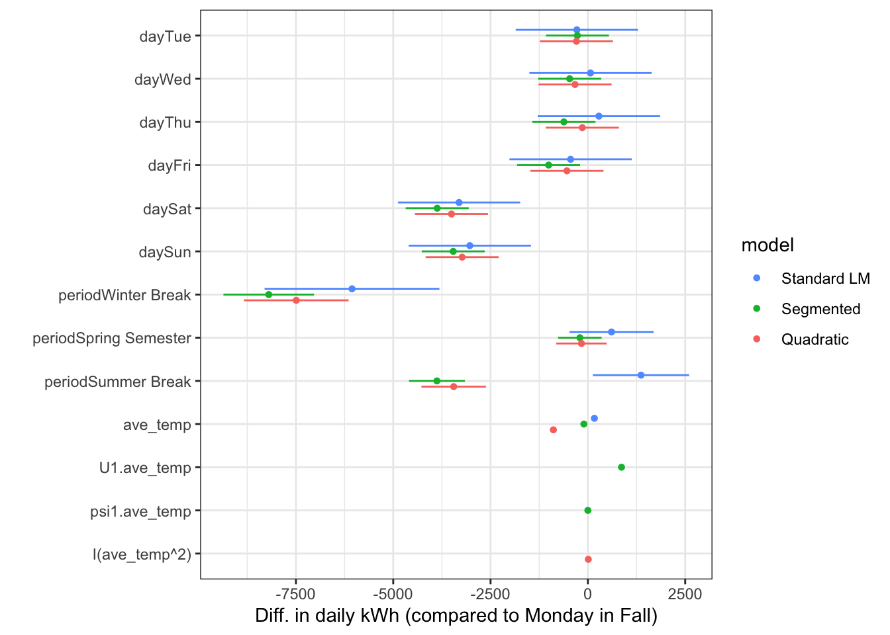

Last updated: 2026-04-13
Checks: 6 1
Knit directory: dickinson_power/
This reproducible R Markdown analysis was created with workflowr (version 1.7.2). The Checks tab describes the reproducibility checks that were applied when the results were created. The Past versions tab lists the development history.
The R Markdown file has unstaged changes. To know which version of
the R Markdown file created these results, you’ll want to first commit
it to the Git repo. If you’re still working on the analysis, you can
ignore this warning. When you’re finished, you can run
wflow_publish to commit the R Markdown file and build the
HTML.
Great job! The global environment was empty. Objects defined in the global environment can affect the analysis in your R Markdown file in unknown ways. For reproduciblity it’s best to always run the code in an empty environment.
The command set.seed(20260107) was run prior to running
the code in the R Markdown file. Setting a seed ensures that any results
that rely on randomness, e.g. subsampling or permutations, are
reproducible.
Great job! Recording the operating system, R version, and package versions is critical for reproducibility.
Nice! There were no cached chunks for this analysis, so you can be confident that you successfully produced the results during this run.
Great job! Using relative paths to the files within your workflowr project makes it easier to run your code on other machines.
Great! You are using Git for version control. Tracking code development and connecting the code version to the results is critical for reproducibility.
The results in this page were generated with repository version f416a34. See the Past versions tab to see a history of the changes made to the R Markdown and HTML files.
Note that you need to be careful to ensure that all relevant files for
the analysis have been committed to Git prior to generating the results
(you can use wflow_publish or
wflow_git_commit). workflowr only checks the R Markdown
file, but you know if there are other scripts or data files that it
depends on. Below is the status of the Git repository when the results
were generated:
Ignored files:
Ignored: .DS_Store
Ignored: .Rhistory
Ignored: .Rproj.user/
Ignored: analysis/.DS_Store
Ignored: analysis/.Rhistory
Ignored: analysis_to-fix/.DS_Store
Ignored: data/.DS_Store
Ignored: data/FY25 Main Meter Data.xlsx
Ignored: data/building_list_FY25_updated.xlsx
Ignored: data/graph_data_life_exp.csv
Ignored: data/housing_counts.csv
Ignored: keys/.DS_Store
Ignored: output/annual_kwh.csv
Ignored: output/building_check.csv
Ignored: output/building_check.xlsx
Ignored: output/daily_kwh.csv
Ignored: output/kwh_academic_2026-03-16.csv
Ignored: output/kwh_academic_2026-03-17.csv
Ignored: output/kwh_academic_2026-03-18.csv
Ignored: output/kwh_academic_2026-03-22.csv
Ignored: output/kwh_academic_2026-03-23.csv
Ignored: output/kwh_academic_2026-03-25.csv
Ignored: output/kwh_academic_2026-03-30.csv
Ignored: output/kwh_academic_2026-04-07.csv
Ignored: output/kwh_annual.csv
Ignored: output/kwh_annual_2026-03-04.csv
Ignored: output/kwh_annual_2026-03-12.csv
Ignored: output/kwh_annual_2026-03-16.csv
Ignored: output/kwh_annual_2026-03-17.csv
Ignored: output/kwh_annual_2026-03-18.csv
Ignored: output/kwh_annual_2026-03-22.csv
Ignored: output/kwh_annual_2026-03-23.csv
Ignored: output/kwh_annual_2026-03-25.csv
Ignored: output/kwh_annual_2026-03-30.csv
Ignored: output/kwh_annual_2026-04-07.csv
Ignored: output/kwh_annual_20260225.csv
Ignored: output/kwh_annual_20260226.csv
Ignored: output/kwh_daily.csv
Ignored: output/kwh_daily_2026-03-04.csv
Ignored: output/kwh_daily_2026-03-12.csv
Ignored: output/kwh_daily_2026-03-16.csv
Ignored: output/kwh_daily_2026-03-17.csv
Ignored: output/kwh_daily_2026-03-18.csv
Ignored: output/kwh_daily_2026-03-22.csv
Ignored: output/kwh_daily_2026-03-23.csv
Ignored: output/kwh_daily_2026-03-25.csv
Ignored: output/kwh_daily_2026-03-30.csv
Ignored: output/kwh_daily_2026-04-07.csv
Ignored: output/kwh_daily_20260225.csv
Ignored: output/kwh_daily_20260226.csv
Ignored: output/kwh_main_annual.csv
Ignored: output/kwh_main_daily.csv
Unstaged changes:
Modified: analysis/main_meter_mod_vis.Rmd
Modified: analysis/main_meter_regression.Rmd
Note that any generated files, e.g. HTML, png, CSS, etc., are not included in this status report because it is ok for generated content to have uncommitted changes.
These are the previous versions of the repository in which changes were
made to the R Markdown (analysis/main_meter_mod_vis.Rmd)
and HTML (docs/main_meter_mod_vis.html) files. If you’ve
configured a remote Git repository (see ?wflow_git_remote),
click on the hyperlinks in the table below to view the files as they
were in that past version.
| File | Version | Author | Date | Message |
|---|---|---|---|---|
| Rmd | e4349ce | maggiedouglas | 2026-04-07 | updated main meter analyses |
library(tidyverse)
library(segmented) # for segmented regression
library(lmtest) # has functions for robust standard errors
library(sandwich) # has functions for robust standard errors
library(parameters) # print results table
library(gt) # format results table
library(visreg) # visualize regression results
library(dotwhisker) # create plots of effects from regressiondaily <- read.csv("./output/kwh_daily_2026-03-30.csv")
daily_date <- daily %>%
mutate(date = ymd(date), # convert date to date object
month = month(date, label = TRUE), # extract month
day = wday(date, label = TRUE)) # extract day of week
# filter to the main meter
daily_main <- filter(daily_date, NAME == "Main Meter")
# create factor for period and put in order
daily_main$period <- factor(daily_main$period,
levels = c("Fall Semester","Winter Break",
"Spring Semester","Summer Break"))
# create factor for day, put in order, and store as a regular factor
daily_main$day <- factor(daily_main$day,
levels = c("Mon","Tue","Wed","Thu","Fri","Sat","Sun"),
ordered = FALSE)
str(daily_main)'data.frame': 365 obs. of 12 variables:
$ type : chr "Main Meter" "Main Meter" "Main Meter" "Main Meter" ...
$ meter : chr "Main Meter - Total" "Main Meter - Total" "Main Meter - Total" "Main Meter - Total" ...
$ NAME : chr "Main Meter" "Main Meter" "Main Meter" "Main Meter" ...
$ days_perc: num 100 100 100 100 100 100 100 100 100 100 ...
$ sqft : int 1119435 1119435 1119435 1119435 1119435 1119435 1119435 1119435 1119435 1119435 ...
$ occupants: num NA NA NA NA NA NA NA NA NA NA ...
$ period : Factor w/ 4 levels "Fall Semester",..: 4 4 4 4 4 4 4 4 4 4 ...
$ date : Date, format: "2024-07-01" "2024-07-02" ...
$ kwh : num 33919 35412 38561 42526 45794 ...
$ ave_temp : int 69 73 78 81 84 86 84 84 86 87 ...
$ month : Ord.factor w/ 12 levels "Jan"<"Feb"<"Mar"<..: 7 7 7 7 7 7 7 7 7 7 ...
$ day : Factor w/ 7 levels "Mon","Tue","Wed",..: 1 2 3 4 5 6 7 1 2 3 ...# Original linear model
mod_full <- lm(kwh ~ day + period + ave_temp, data = daily_main)
# Segmented regression
mod_seg <- segmented(mod_full, seg.Z = ~ ave_temp, psi = 60)
# Quadratic model
mod_quad <- lm(kwh ~ day + period + ave_temp + I(ave_temp^2), data = daily_main)When we are fitting a complex model, it is helpful to report the full
results in a concise format. A table is a good way to do this. Below is
an example for the segmented model; similar code should also work for
standard or quadratic models. This function doesn’t seem to have a
built-in caption, so we will simply create a caption in our usual R
Markdown text (remember that you can bold the table number by enclosing
the text in two asterisks **)
Table 1. Statistical results of a segmented regression model for daily electricity use on the main meter.
results <- coeftest(mod_seg, vcov = vcovHAC(mod_seg))
print_html(model_parameters(results, summary = TRUE), digits = 0)| Model Summary | |||||
| Parameter | Coefficient | SE | 95% CI | t(352) | p |
|---|---|---|---|---|---|
| (Intercept) | 35008 | 1316 | (32420, 37596) | 27 | < .001 |
| dayTue | -270 | 246 | (-754, 215) | -1 | 0.275 |
| dayWed | -468 | 327 | (-1111, 175) | -1 | 0.153 |
| dayThu | -617 | 344 | (-1293, 60) | -2 | 0.074 |
| dayFri | -1008 | 332 | (-1661, -356) | -3 | 0.003 |
| daySat | -3871 | 303 | (-4466, -3275) | -13 | < .001 |
| daySun | -3459 | 269 | (-3989, -2929) | -13 | < .001 |
| periodWinter Break | -8198 | 711 | (-9596, -6799) | -12 | < .001 |
| periodSpring Semester | -206 | 534 | (-1255, 844) | -4e-01 | 0.700 |
| periodSummer Break | -3877 | 714 | (-5282, -2473) | -5 | < .001 |
| ave_temp | -103 | 27 | (-157, -50) | -4 | < .001 |
| U1.ave_temp | 864 | 46 | (774, 954) | 19 | < .001 |
| psi1.ave_temp | 0 | 8e-01 | (-2, 2) | 0 | > .999 |
# Create a data frame with new values (must match model's predictor names)
period_data <- data.frame(ave_temp = 58, # set temp to the mean in the dataset
day = "Mon", # set day as Monday for consistency with other summaries
period = c("Fall Semester","Winter Break", # include all levels of period
"Spring Semester","Summer Break"))
# Generate estimated means + confidence interval
conf_period <- as.data.frame(predict(mod_seg, # store as a data frame, generate predictions from fitted model
vcov = vcovHAC(mod_seg), # address the violations of assumptions
newdata = period_data, # feed in the new data for which I want predictions
interval = "confidence", level = 0.95)) %>% # set confidence interval to 95%
mutate(period = c("Fall Semester","Winter Break", # add period back into the data frame
"Spring Semester","Summer Break"))
# Graph
ggplot(conf_period) +
geom_bar(aes(x=period, y=fit), stat="identity", fill="skyblue", alpha=0.8) +
geom_errorbar( aes(x=period, ymin=lwr, ymax=upr), width=0.4, colour="darkgray", alpha=0.9, size=1) +
theme_bw() +
labs(x = "", y = "Electricity use (kWh per day)",
title = "Figure 1. Main meter electricity use by time of year",
subtitle = "Estimated for a Monday with an outdoor temperature of 58 degrees F")
# Create a data frame with new values (must match model's predictor names)
day_data <- data.frame(ave_temp = 58,
day = c("Mon","Tue","Wed","Thu","Fri","Sat","Sun"),
period = "Fall Semester")
# Generate estimated means + confidence interval
conf_day <- as.data.frame(predict(mod_seg, vcov = vcovHAC(mod_seg),
newdata = day_data,
interval = "confidence", level = 0.95)) %>%
mutate(day = factor(c("Mon","Tue","Wed","Thu","Fri","Sat","Sun"),
levels = c("Mon","Tue","Wed","Thu","Fri","Sat","Sun")))
# Graph
ggplot(conf_day) +
geom_bar(aes(x=day, y=fit), stat="identity", fill="skyblue", alpha=0.8) +
geom_errorbar( aes(x=day, ymin=lwr, ymax=upr), width=0.4, colour="darkgray", alpha=0.9, size=1) +
theme_bw() +
labs(x = "", y = "Electricity use (kWh per day)",
title = "Figure 2. Main meter electricity use by day of the week",
subtitle = "Estimated for a day in fall with an outdoor temperature of 58 degrees F")
The segmented model does not interact well with standard plotting functions, so we need to use a slightly different approach to its visualization. The code below uses R’s base plotting function to visualize the fitted model.
# plot original data with fit
plot(mod_seg, vcov = vcovHAC(mod_seg),
col = 'black', res = TRUE, conf.level = .95, shade = T,
res.col = adjustcolor("steelblue", alpha.f = 0.7), # set color of data + transparency
xlab = "Temperature (degrees F)", ylab = "Electricity use (kWh per day)") # label axes
title("Figure 3. Main meter electricity use by temperature", # how to set the title in base R plotting function
adj = 0, cex.main = 1.2, font.main = 1) 
For a linear model with or without a quadratic term, we can use a
helpful function called visreg to visualize the results.
Helpfully, by setting gg = TRUE the graph will be generated
using ggplot, and then we can use all our usual functions to adjust its
formatting.
visreg(mod_quad, xvar = "ave_temp", # feed in model, specify temp as the variable
cond=list(day = "Mon", period = "Fall Semester"), # set levels of other variables
gg = TRUE) + # specify to use ggplot
theme_bw() +
labs(x = "Temperature (degrees F)", y = "Electricity use (kWh per day)",
title = "Figure 3. Main meter daily electricity use by temperature")
Sometimes it’s helpful to compare the estimates derived from
different models to contextualize and interpret our results. Doing so
helps us assess the sensitivity of our results to the modeling choices.
The dwplot function allows us to easily compare the
coefficients from a list of fitted models.
dwplot(list(`Standard LM` = mod_full, # code on the left is the name of the model; right is the model object
Segmented = mod_seg,
Quadratic = mod_quad)) +
theme_bw() +
labs(x = "Diff. in daily kWh (compared to Monday in Fall)")
sessionInfo()R version 4.5.2 (2025-10-31)
Platform: x86_64-apple-darwin20
Running under: macOS Ventura 13.7.8
Matrix products: default
BLAS: /Library/Frameworks/R.framework/Versions/4.5-x86_64/Resources/lib/libRblas.0.dylib
LAPACK: /Library/Frameworks/R.framework/Versions/4.5-x86_64/Resources/lib/libRlapack.dylib; LAPACK version 3.12.1
locale:
[1] en_US.UTF-8/en_US.UTF-8/en_US.UTF-8/C/en_US.UTF-8/en_US.UTF-8
time zone: America/New_York
tzcode source: internal
attached base packages:
[1] stats graphics grDevices utils datasets methods base
other attached packages:
[1] dotwhisker_0.8.4 visreg_2.8.0 gt_1.3.0 parameters_0.28.3
[5] sandwich_3.1-1 lmtest_0.9-40 zoo_1.8-15 segmented_2.2-1
[9] nlme_3.1-168 MASS_7.3-65 lubridate_1.9.5 forcats_1.0.1
[13] stringr_1.6.0 dplyr_1.2.0 purrr_1.2.1 readr_2.2.0
[17] tidyr_1.3.2 tibble_3.3.1 ggplot2_4.0.2 tidyverse_2.0.0
loaded via a namespace (and not attached):
[1] tidyselect_1.2.1 farver_2.1.2 S7_0.2.1
[4] fastmap_1.2.0 TH.data_1.1-5 bayestestR_0.17.0
[7] promises_1.5.0 digest_0.6.39 estimability_1.5.1
[10] timechange_0.4.0 lifecycle_1.0.5 survival_3.8-3
[13] magrittr_2.0.4 compiler_4.5.2 rlang_1.1.7
[16] sass_0.4.10 tools_4.5.2 yaml_2.3.12
[19] data.table_1.18.2.1 knitr_1.51 labeling_0.4.3
[22] ggstance_0.3.7 plyr_1.8.9 xml2_1.5.2
[25] RColorBrewer_1.1-3 multcomp_1.4-30 workflowr_1.7.2
[28] withr_3.0.2 grid_4.5.2 datawizard_1.3.0
[31] git2r_0.36.2 xtable_1.8-8 emmeans_2.0.2
[34] scales_1.4.0 insight_1.4.6 cli_3.6.5
[37] mvtnorm_1.3-6 rmarkdown_2.30 generics_0.1.4
[40] otel_0.2.0 rstudioapi_0.18.0 performance_0.16.0
[43] tzdb_0.5.0 cachem_1.1.0 splines_4.5.2
[46] marginaleffects_0.32.0 vctrs_0.7.1 Matrix_1.7-4
[49] jsonlite_2.0.0 hms_1.1.4 patchwork_1.3.2
[52] jquerylib_0.1.4 glue_1.8.0 codetools_0.2-20
[55] stringi_1.8.7 gtable_0.3.6 later_1.4.8
[58] pillar_1.11.1 htmltools_0.5.9 R6_2.6.1
[61] rprojroot_2.1.1 evaluate_1.0.5 lattice_0.22-7
[64] backports_1.5.0 httpuv_1.6.16 bslib_0.10.0
[67] Rcpp_1.1.1 gridExtra_2.3 whisker_0.4.1
[70] xfun_0.56 fs_1.6.7 pkgconfig_2.0.3